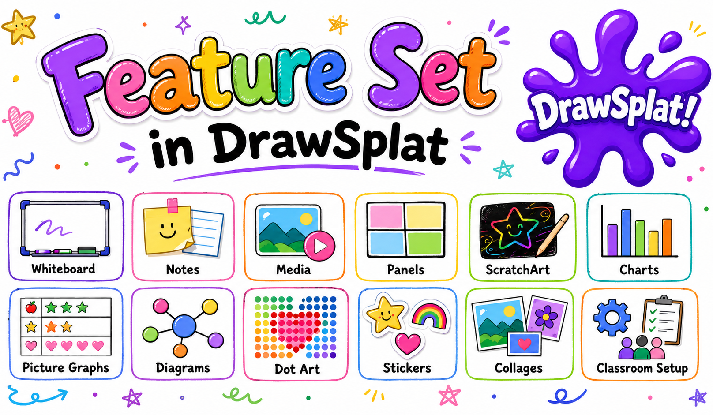
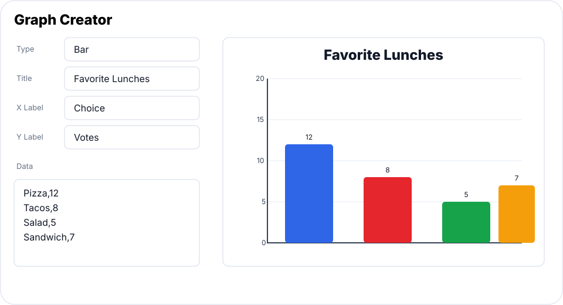
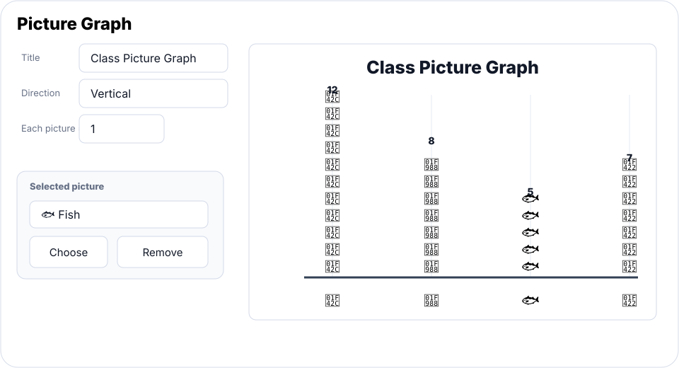
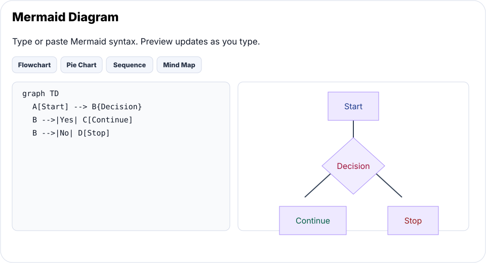
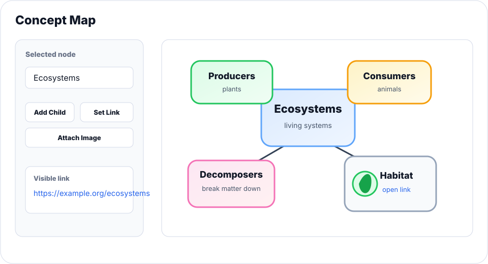
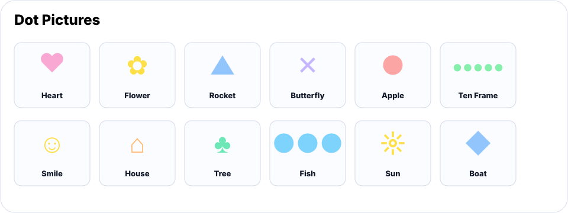
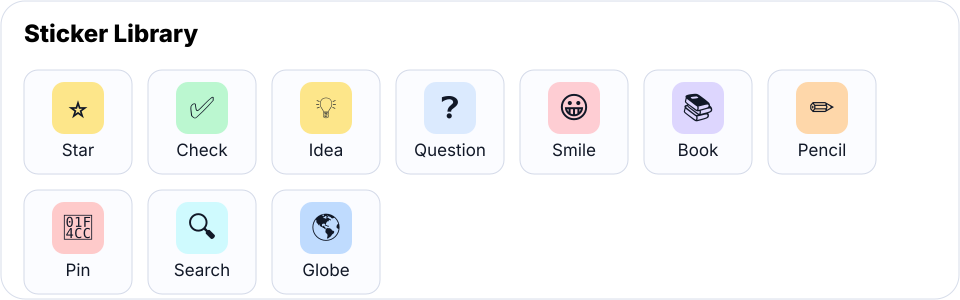
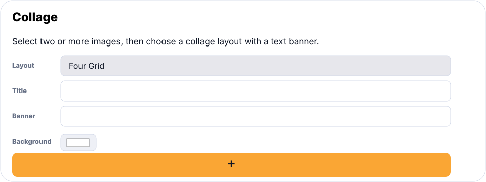
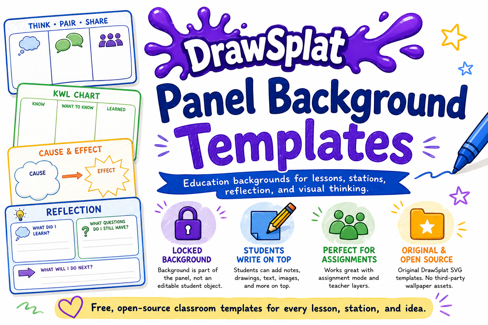

Content added to the board
- Load Image
- Coloring Book
- Mosaic Images and Collage
- Graph Creator and Picture Graph
- Mermaid Diagram, Word Cloud, and Concept Map
- Emoji Mixer
- ScratchArt
- Dot Pictures
- Stickers and Custom Sticker
Feature Set
Use the core whiteboard for drawing, notes, media, and panels, then open focused builders for ScratchArt, charts, picture graphs, diagrams, dot art, stickers, collages, and classroom setup workflows.

Open Directly
These classroom tools run as their own pages, so you can use them without first opening the DrawSplatTM whiteboard.
Record from a microphone, import audio, arrange clips on multiple tracks, edit non-destructively, save local projects, and export a WAV mix. Audio stays in the browser unless you download it.
Animated GIF MakerBuild an animated GIF from image frames. Reorder, set per-frame delay, loop count, original-resolution or scaled output. Per-frame median-cut palette with optional Floyd-Steinberg dithering for clean gradients. Real LZW compression and adjustable palette size (256 → 32 colors) typically produce GIFs under 100 KB. Also exports as MP4 video (modern browsers, via native WebCodecs) or WebM. Everything runs in the browser; nothing is uploaded.
Big LinkMake a poster-style "type this URL" card to project on the board or print as a sign. Big bold link, optional title strip, optional note, accent color, four card shapes (16:9 / 4:3 / 1:1 / 3:4). Download as PNG or SVG. Standalone version of the whiteboard's Big Link widget.
Bingo Card GeneratorCreate printable bingo cards from vocabulary, questions, names, or numbers.
Live Bingo CallerRun animated bingo calls and same-device player cards.
Brain SortDump every thought in your head and get back a grouped, checkable to-do list — by topic, effort, or when.
Clock WizardGet an honest time estimate for a task, with phase breakdown and an ADHD-tax allowance so you don't over-promise.
Markdown StudioWrite, preview, and export classroom Markdown pages.
Mermaid Diagram StudioCompose flowcharts, sequence diagrams, mind maps, Gantt, timelines, class, state, and Venn diagrams. Live preview and export.
Chart StudioTurn a CSV into a bar chart, line chart, or animated bar-chart race. Pick columns, choose a palette, download PNG or SVG. Runs entirely in the browser.
CipherSplatProtect files, recursive folders, and private text with local AES-256-GCM encryption. Nothing is uploaded, tracked, or stored by DrawSplat.
Coloring BookColor printable line-art pages right in the browser — pick a page, paint with a brush and color palette, undo or clear, then download PNG/SVG or print.
Graph MakerDraw a Cartesian coordinate plane, plot points, connect them, and add a y = mx + b line. One- or four-quadrant grids for math lessons. Download PNG or SVG.
Picture GraphBuild a pictograph where one icon equals a set number of units. Editable rows, emoji icons, adjustable key, optional values. Download PNG or SVG.
Coin FlipperFlip custom coins for probability, games, and quick choices.
Concept Map StudioInfinite canvas with drag, zoom, and Space+drag pan. Word-wrapped labels in three size tiers (main idea / connected / detail). Twelve graphic-organizer templates. Optional section filter and a live traditional outline view (Roman/Letter/Number) you can copy as Markdown or hand off to Markdown Studio. Save/load JSON, export readable SVG/PNG, or copy an <iframe> embed code for Google Sites and WordPress. JSON Schema spec for AI-generated maps.
Dice RollerRoll classroom dice for games, math, and random prompts.
Dicebreaker CreatorCreate dice-based discussion prompts and icebreakers.
Draw & SketchQuick freehand sketch pad for warm-ups and visual brainstorming.
Fortune WheelTeacher-curated wheel with a student-facing share link.
Meme PuzzleBuild image-based puzzle activities for students.
Quiz & Flashcard StudioBuild or import quiz question banks from CSV, JSON, XLSX, ODS, or ODT; run student/team quiz links; export question banks; and transfer the same content into printable flashcards. Includes drawsplat-quiz-flashcard_v1 CSV/JSON templates for AI-generated imports.
Create practical rubrics for projects and assignments.
ImageSplat™Edit screenshots and images with Lightshot-style annotations, Kleki-inspired layers, crop, arrows, boxes, text, clipboard import/export, selected-image GIF creation, and frame downloads for the DrawSplat Animated GIF Maker. Runs entirely in the browser.
Step-SplatSplat any task into bite-size steps with adjustable spiciness — a neurodivergent-friendly task chunker.
Story WheelSpin story prompts for writing, speaking, and warmups.
ToneshifterPaste a draft and rewrite it in a chosen tone — formal, friendly, concise, diplomatic, encouraging, or plain English.
Vibe CheckPaste a tricky message and get an honest read on its tone — warm, urgent, sarcastic, frustrated, passive-aggressive, and more.
Wheel SpinnerGeneric spinner — drop in any list and let the wheel pick the winner.
Word Search MakerGenerate word searches for vocabulary practice.
Self-Hosting Security
DrawSplatTM v3.1.7 refreshes the self-hosted MySQL path with practical guardrails for schools and organizations running their own backend. The self-host bundle also includes browser-only classroom widgets such as Quiz & Flashcard Studio and its versioned CSV/JSON import templates.
Play Together
Standalone classroom games — turn-based, multiplayer, or single-player puzzles that open in their own page. More games are on the way; check the Games dropdown in the top nav for the latest list.
Pixel-art two-player castle siege — choose munitions, account for wind, and topple the opposing keep.
Dots and BoxesTwo-player classic — connect dots to claim boxes on a colourful grid. Pick CPU or pass-and-play.
Flood FillColour-merging strategy — flood from the top-left and unify the whole board within a move budget.
Flow FreeConnect every matched terminal pair with non-crossing paths. Cover every cell to win.
Fun QuizPick a quiz pack (Winnie the Pooh, Smurfs, Snow White, Looney Tunes) and play a quick character-trivia round.
GilaSplatRetro underground maze arcade. Guide a purple iridescent gila monster through 15 hand-illustrated desert burrows, eating eggs and hatchlings while dodging foxes, owls, hawks, and coyotes — with spoken quips on every snack.
Lights OutMatrix-inversion puzzle. Toggle cells (and their orthogonal neighbours) to clear the grid under par.
SplatballColorful paddle-rally arcade with sound. Player vs Player, Player vs Computer, or Computer vs Computer — pick names, colors, and a target score.
Squirrel RunCross three traffic lanes, dodge vehicles and animals, collect acorns, and guide the squirrel safely to the tree hollow.
Super Star TrekCommand the Enterprise in a browser edition of the classic quadrant strategy game with sensors, shields, phasers, torpedoes, starbases, and a mission clock.
Tangram PackingDrag and rotate polyomino blocks to fill a dark silhouette without overlap.
Typing GamesFour separate experiences: spy driving, a computer word-board opponent, passage practice, and a kitten-and-puppy adventure for ages 4–9. Each has instructions and six interface languages.
Cipher ChaseType TEKS vocabulary to clear rival cars, steer around civilians, and learn each word’s definition. Sound starts on and includes a playback test.
Wordfall ReactorConnect letters on a word board against the computer. Starts with 95 everyday words; TEKS science, math, and social studies vocabulary is optional. Hints give definitions, leaving you to find the word and its placement.
Story SprintType passages with speed, accuracy, and character feedback. Import classroom text locally; paste and drag/drop are blocked in scored practice. Choose Next passage when you finish.
Paws & Keys AdventureMeet kittens and puppies in a gentle adventure for ages 4–9, with 12 progressive trails, four worlds, finger hints, and saved stars.
UntangleDrag graph nodes around until no edges cross. Crimson lines fade to emerald as you clear them.

Create bar, line, area, and pie charts from quick classroom rows. Use it for surveys, counts, comparisons, and discussion prompts.

Build picture-first graphs where students can work from icons, uploaded images, and locally bundled Smithsonian Open Access animal photos.

Generate flowcharts, sequences, mind maps, timelines, Gantt charts, class diagrams, and state diagrams from Mermaid syntax.

Create concept maps directly on the canvas with editable nodes, live connectors, node images, and Ctrl/Cmd-click web links.

Insert dot-based hearts, flowers, rockets, butterflies, apples, ten frames, fish, suns, boats, and more for math and pattern work.

Use quick visual stamps for feedback, signals, prompts, sorting, and student-friendly board markup.

Select images on the board and combine them into layouts with optional titles, banners, background color, and accent color.

Add a ScratchArt cover over a colorful background, then use circle-size Eraser controls to reveal the hidden layer. Each reveal stroke can be undone incrementally.

Use original DrawSplatTM classroom backgrounds as locked panel structures for organizers, literacy, math, science, stations, and reflection.

Use the Support and Guides pages for Google Drive + Sheets setup, MySQL backend setup, ScratchArt activities, and project reference materials.
Use pen, shapes, arrows, text, sticky notes, selection tools, image crop, and object styling for live visual thinking.
Organize lessons, stations, brainstorming rounds, or project phases across multiple board panels.
Reveal class, student, assignment, answer-key, moderation, and turn-in tools only when they are needed.
Add images, audio notes, emojis, GIFs, mosaics, collages, word clouds, Mermaid diagrams, ScratchArt covers, and picture graphs.
Use Big Link, Coin Flipper, Dice Roller, Dicebreaker Creator, Meme Puzzle, Poll, Progress Race, Random Pick, Rubric Builder, Scoreboard, Story Wheel, Timer, Traffic Light, Wheel Spinner, Word Search Maker, and Work Mode for classroom routines.
Insert now focuses on insertable content, Tools holds creation workflows, File includes restore points, and Options includes Keyboard Shortcuts.
Set panel backgrounds, remove background colors, add a canvas color layer with Paint Bucket, and cover backgrounds quickly for ScratchArt activities.
Autosave on your device, use Google’s classroom backend, or save private account-owned boards through MySQL on Railway, DigitalOcean, or an existing server. MySQL Save/Open includes added audio/video notes and protects newer copies with revision checks. Google classroom sharing and turn-in remain separate. MySQL setup guide.
Open the Support page for videos, classroom resource articles, setup guides, and activity walkthroughs such as Rainbow ScratchArt.
Use reset controls or browser-session expiration to clear temporary work after a set window, such as 24 hours.
Record or import video, cut unwanted sections, add illustrated opening and closing panels, and insert full-image cards. Move and format text, frame your footage, and export a private MP4 for sharing.
Local document-to-PDF conversion, on-page text formatting, PNG/JPG/WebP exports, reversible photo adjustments, video timeline markers, audio analysis, and ShowSplat WebDeck v5 are available now. See the October 9 walkthrough and format limits.